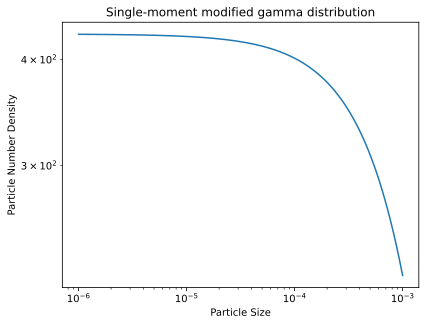
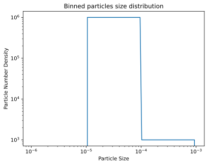

Particle size distributions
"""Particle Size Distributions"""
import matplotlib.pyplot as plt
import numpy as np
import pyarts3 as pyarts
from pyarts3.arts import (
AtmPoint,
BinnedPSD,
MGDSingleMoment,
SizeParameter,
)
# Download catalogs
pyarts.data.download()
# %% Atmosphere
ws = pyarts.Workspace()
ws.surface_fieldPlanet(option="Earth")
ws.surface_field[pyarts.arts.SurfaceKey("t")] = 295.0
ws.atmospheric_fieldRead(
toa=100e3, basename="planets/Earth/afgl/tropical/", missing_is_zero=1
)
ws.atmospheric_fieldIGRF(time="2000-03-11 14:39:37")
# %% Single-moment modified gamma distribution
rain_first_moment = pyarts.arts.ScatteringSpeciesProperty(
"rain", pyarts.arts.ParticulateProperty("MassDensity")
)
psd = MGDSingleMoment(rain_first_moment, "Field19", 270, 300, False)
point = AtmPoint()
point["t"] = 280
point[rain_first_moment] = 1e-3
sizes = np.logspace(-6, -3, 101)
pnd = psd.evaluate(point, sizes, 1.0, 1.0)
# %% Plot
fig, ax = plt.subplots()
ax.plot(sizes, pnd)
ax.set_yscale("log")
ax.set_xscale("log")
ax.set_xlabel("Particle Size")
ax.set_ylabel("Particle Number Density")
ax.set_title("Single-moment modified gamma distribution")
# %% Binned particles size distribution
bins = [1e-5, 1e-4, 1e-3]
counts = [1e6, 1e3]
psd = BinnedPSD(SizeParameter("DVeq"), bins, counts, 273.15, 300)
sizes = np.logspace(-6, -3, 101)
pnd = psd.evaluate(point, sizes, 1.0, 1.0)
# %% Plot
fig, ax = plt.subplots()
ax.plot(sizes, pnd)
ax.set_yscale("log")
ax.set_xscale("log")
ax.set_xlabel("Particle Size")
ax.set_ylabel("Particle Number Density")
ax.set_title("Binned particles size distribution")

{kind=link}

{kind=link}